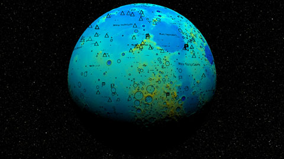
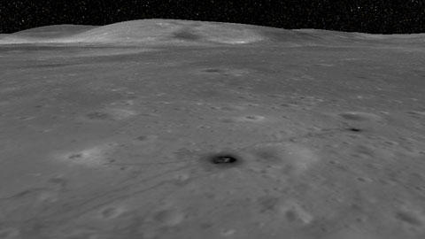
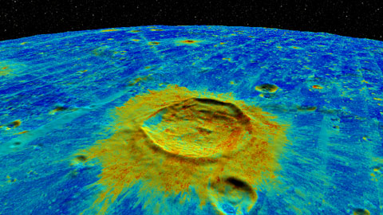
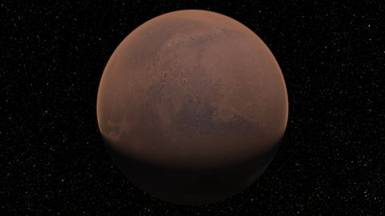
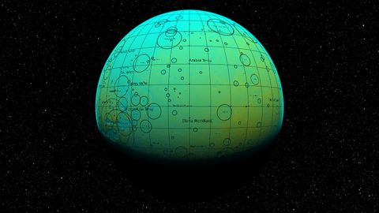

The following ZIP archives provide three sets of Panoptic scenes: stereoscopic panoromas, Mars planetary visualizations, and lunar visualizations. Each ZIP contains an XML scene definition file along with all of the SCM TIFF images and annotations that those scenes use. These files may all be individually downloaded below.
| All panorama examples | 1.1 GB | sha1 8a5ffb74b42b0fcedc37aa88b41a100fa3567af2 |
| All Moon examples | 21 GB* | sha1 e12fb66f8b23004c096064a2b5298131fad98855 |
| All Mars examples | 8.1 GB* | sha1 cd4abe50ebca6e5ca31f3915f78a9dbb6ff88653 |
* Be advised, some common ZIP utilities are not capable of handling archives larger than 2GB. If you have trouble, check the SHA-1 sum before declaring the ZIP corrupt. If the checksum matches but the problem persists, try another ZIP utility.
The stellar background image is included in both the Moon and Mars archives. The two copies are identical.
|
Panorama Example 0 is an omnistereoscopic panorama of the cypress-tupelo forest in the Bluebonnet swamp. The scene includes one color image for each eye, with the channel mapping given explicitly. The zooming vertex shader enables magnification, allowing two gigapixels of data per eye to be explored. |
|
Panorama Example 1 is another high-resolution omnistereoscopic panorama captured at the Bluebonnet swamp. |
|
Panorama Example 2 is an omnistereoscopic panorama captured on the campus of Louisiana State University. This image may be challenging to view, as the sun shines upon one eye but not the other. Also, small discrepancies in the panoramic stitching result in a number of false 3D artifacts. |
|
Panorama Example 3 is an omnistereoscopic panorama captured in Tiger Stadium on the campus of Louisiana State University. Note the men changing lightbulbs. |
|
Moon Example 0 is the best scene for exploring the Moon and appreciating its beauty up close. The scene uses a vertex displacement shader to render a seamless merger of the Lunar Orbiter Laser Altimeter (LOLA) terrain map, which is good at the poles but bad at the equator, with the 100-meter Global Lunar DTM (GLD100), which is good at the equator but bad at the poles. The Lunar Reconnaissance Orbiter Camera (LROC) Wide Angle Camera (WAC) global mosaic is mapped onto this. |
|  | Moon Example 1 emphasizes terrain, using the LOLA / GLD100 merger in three ways. First it is used as a displacement map as in the first example, second as a color-mapped scalar field, and third as a normal map that gives shaded relief. The complete IAU lunar nomenclature is drawn atop in opaque black. |
|
Moon Example 2 demonstrates the overlay of high-resolution data atop low-resolution, permitting the exploration of detail in context. In this case, the low-resolution data is the terrain map with WAC at a resolution around 100 meters per pixel, as above. The high-resolution data is an LROC Narrow Angle Camera (NAC) view of the site of the landing of Apollo 11, with a resolution of around one half meter per pixel. Relevant features of the scene are labeled. |
|  | Moon Example 3 is the most complex example in the set. It shows a NAC overlay of the site of Apollo 16 in the context of the lunar terrain and WAC, displayed with shaded relief. The Apollo 16 image is rich with human and rover tracks and gives stunning detail close-up. Viewed from afar, the shaded context provides the highest-fidelity and most information-dense presentation of the full globe of the moon currently available. | |
Moon Example 4 shows shaded relief of a displaced surface as in the DTM example, but this time with a separate color-mapped scalar data set applied. This is the Lunar Digital Slope Map (LDSM) a secondary product of the LOLA. A 10-degree graticule is drawn atop in opaque black. |
|  | Moon Example 5 shows Mini Radio Frequency (Mini-RF) synthetic aperture radar data. Mini-RF is notable for its presentation of information deep in the craters near the poles, where the light of the sun can never reach. Mini-RF is only available near the poles, and gray shaded relief appears elsewhere. |
|  | Mars Example 0 is the best scene for exploring Mars. The scene uses the vertex displacement shader to render MOLA as a height map. The DTM is normalized to a range of 3,373,043m to 3,417,245m to match the scale of the Mars one-to-one. The color map is MDIM2.1 and a rough approximation to the martian atmosphere is included. |
|  | Mars Example 1 emphasizes terrain, using the MOLA as a displacement map, as a color-mapped scalar field, and as a normal map giving shaded relief. The complete IAU martian nomenclature is drawn atop in opaque black. |
|
The background of the planetary examples is a rendering of the Synthetic All-Sky Panorama. |
The panoramic images were captured in and around Baton Rouge, Louisiana, using the CAVECam omnistereoscopic panoramic camera. They are compressed using lossy JPEG and come in left-right pairs.
| 0-Panoptic-Example-Panoramas.xml | 1.2 KB | sha1 42e792daa42de9bb85a4cdb3d55ebb120f8405e6 |
| Bluebonnet-0-L-254-5-J.tif | 208 MB | sha1 dc976fc575e754826898cb01c5558116dab22e6a |
| Bluebonnet-0-R-254-5-J.tif | 207 MB | sha1 1eb2676c081c6271ad7226171ec79f9edfcbe9a6 |
| Bluebonnet-3-L-254-5-J.tif | 194 MB | sha1 ab7c28de9648956af10aca4be9ef3076599a67d9 |
| Bluebonnet-3-R-254-5-J.tif | 192 MB | sha1 c125ad481d3daea7030135a2a3c1840ccb6a06ba |
| LSU1-L-254-5-J.tif | 160 MB | sha1 a426239b7ef75e511511b01f12de1fc8072b770b |
| LSU1-R-254-5-J.tif | 160 MB | sha1 4dcf77b17f19bb80242fd305f4d27116e305b527 |
| Tiger-Stadium-2-L-254-5-J.tif | 84 MB | sha1 12be01814692a4f301e3bd32d0e42f31d1fb652f |
| Tiger-Stadium-2-R-254-5-J.tif | 82 MB | sha1 b7818a015442fcf69bd558bf9a324285460f95b5 |
The lunar imagery is derived from data captured by the Lunar Reconnaissance Orbiter (LRO). Sources include the Lunar Orbiter Laser Altimeter (LOLA), the Mini Radio Frequency (Mini-RF) synthetic aperture radar, the Lunar Reconnaissance Orbiter Camera (LROC) Wide Angle Camera (WAC) and Narrow Angle Camera (NAC), and the 100-meter Global Lunar DTM (GLD100) which was derived from stereo WAC imagery. All use lossless FLATE compression.
| 1-Panoptic-Example-Moon.xml | 3.4 KB | sha1 adfdc7620ab29f3c2063e52bae8f34da92beca3a |
| DTM-254-7.tif | 7.3 GB | sha1 621ef452cdb1b154f92a38cfc191d3f69e59b59e |
| DTM-254-7-N.tif | 6.6 GB | sha1 c8a4151d646541351025b539f32e4c2367aba207 |
| WAC-254-7.tif | 2.8 GB | sha1 87d9962f5d27baa4843019b65ac6fe3fc6603e68 |
| LDSM-254-4.tif | 58 MB | sha1 61f87df8b23fbff58b1e55ee5212fa9a98e23fec |
| Mini-RF-CP-254-7.tif | 355 MB | sha1 08715b65fd6660c463a417f668e5a8c4acc46e38 |
| NAC_ROI_APOLLO11LOA-254-15.tif | 1.1 GB | sha1 1c24ad25457f277248e2a668b3bc4e5241f60404 |
| NAC_ROI_APOLLO16HIA-254-15.tif | 3.1 GB | sha1 ae02e9badbc0f1f6a172f02b42dc6236e9c516ee |
| synaspan-254-4.tif | 134 MB | sha1 65279ca574e02daa29544c34c16a28f390559325 |
| IAUMOON.csv | 578 KB | sha1 e43cff1cdc745695c6123be7c930b75fc4d1cffd |
| graticule.csv | 8.6 KB | sha1 535a735655deab3f9e804101ca16c028a5be41cc |
| Apollo11.csv | 64 4B | sha1 770908d1c4b806857a0fe018cc26435dae135dad |
The Mars imagery is derived from data captured by the Mars Global Surveyor (MGS), the Viking Orbiter, and Mariner 9. Sources include the MGS Mars Orbiter Laser Altimeter (MOLA) Elevation Model, and the Viking MDIM2.1 Colorized Global Mosaic. All use lossless FLATE compression.
| 2-Panoptic-Example-Mars.xml | 3.4 KB | sha1 b8afb28ea6dcb4c17cb1a70f3aa5c3992389c287 |
| MDIM21-180-7.tif | 6.3 GB | sha1 cae55f38590ec48cbaf51091091e454e5af2237a |
| MEGDR-K-180-6.tif | 981 MB | sha1 24614476d9c6fd811532e8ddfe0ddd2400748402 |
| MEGDR-K-180-6-N.tif | 743 MB | sha1 2a81e1fe4950b45745d251ec18ad2f8c815f9ac8 |
| IAUMARS.csv | 91 KB | sha1 be31efea8eacd263764eac1dd88810954bf82d12 |
| synaspan-254-4.tif | 134 MB | sha1 65279ca574e02daa29544c34c16a28f390559325 |